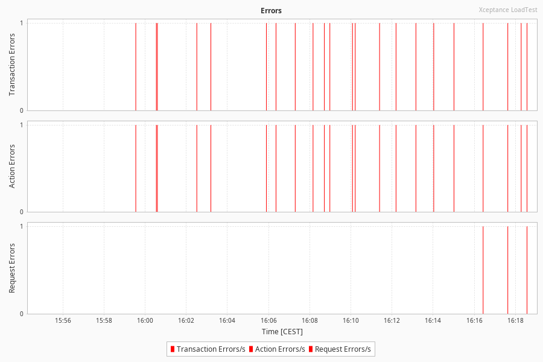
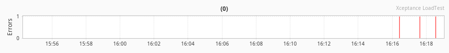
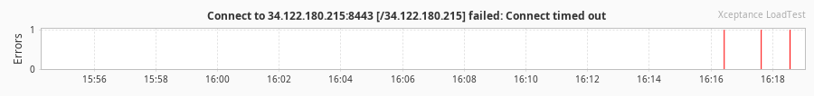
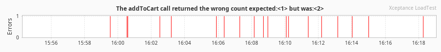
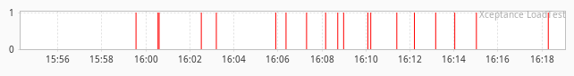
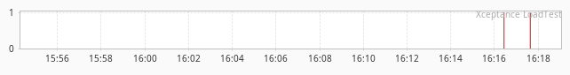
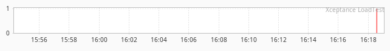

Performance Test Report
Errors
This section lists all errors that occurred during the load test. The data listed here helps you identify application errors or test problems. More...Hide...
Errors are hard failures in the flow of testing. They stop the current execution of the test case (or transaction), log an error, and eventually move on to the next test execution if scheduled to do so.
Errors can occur on transaction, action, or request level. Errors on the request level are counted on action level as well. Action level errors are also counted as transaction errors. A connection reset, for instance, counts as request error and causes the action to fail (counted). As a result, the transaction fails as well which again is counted and logged.
The Overview section below lists the error message and the count. It ignores the stack trace to sum up common problems without relating them to the test case. The Details section beneath lists the full stack trace next to the test case and the directory in which you can find the data dump for further analysis.

Request Errors
This section displays the request errors grouped by response code. More...Hide...
The chart creation can be configured by setting the corresponding report generator properties. (See reportgenerator.properties file for more details)

Transaction Error Overview
| Error Message | Count | Percentage |
|---|---|---|
| Totals (2 entries) | 22 | 100.0% |
| Connect to 34.122.180.215:8443 [/34.122.180.215] failed: Connect timed out | 3 | 13.6% |
| The addToCart call returned the wrong count expected:<1> but was:<2> | 19 | 86.4% |
More...Hide...
The chart limit can be set or disabled by setting the corresponding report generator properties. (See reportgenerator.properties file for more details)

Back to Table
Back to TableTransaction Error Details
More...Hide...
The chart limit can be set or disabled by setting the corresponding report generator properties. (See reportgenerator.properties file for more details)
| Count | Test Case | Action | Directory | Error Information |
|---|---|---|---|---|
| 19 | TOrder | AddToCart | ac0002_europe-north1_00/TOrder/161/output/1720188147025 ac0002_europe-north1_00/TOrder/201/output/1720188032025 ac0002_europe-north1_00/TOrder/213/output/1720188432025 ac0003_europe-north1_00/TOrder/144/output/1720188679812 ac0003_europe-north1_00/TOrder/149/output/1720188784811 ac0003_europe-north1_00/TOrder/95/output/1720188348812 ac0004_europe-north1_00/TOrder/242/output/1720188485013 ac0004_europe-north1_00/TOrder/244/output/1720188608013 ac0004_europe-north1_00/TOrder/259/output/1720188378014 ac0004_europe-north1_00/TOrder/260/output/1720187969014 |
The addToCart call returned the wrong count expected:<1> but was:<2>
java.lang.AssertionError: The addToCart call returned the wrong count expected:<1> but was:<2> at org.junit.Assert.fail(Assert.java:89) at org.junit.Assert.failNotEquals(Assert.java:835) at org.junit.Assert.assertEquals(Assert.java:647) at com.xceptance.posters.loadtest.actions.AddToCart.execute(AddToCart.java:197) at com.xceptance.xlt.api.actions.AbstractAction.run(AbstractAction.java:359) at com.xceptance.xlt.api.actions.AbstractWebAction.run(AbstractWebAction.java:152) at com.xceptance.xlt.api.actions.AbstractHtmlPageAction.run(AbstractHtmlPageAction.java:138) at com.xceptance.posters.loadtest.tests.TOrder.order(TOrder.java:113) ...  |
| 2 | TBrowse | Homepage | ac0002_europe-north1_00/TBrowse/290/output/1720189027024 ac0002_europe-north1_00/TBrowse/372/output/1720188955030 |
Connect to 34.122.180.215:8443 [/34.122.180.215] failed: Connect timed out
org.apache.http.conn.ConnectTimeoutException: Connect to 34.122.180.215:8443 [/34.122.180.215] failed: Connect timed out at org.apache.http.impl.conn.DefaultHttpClientConnectionOperator.connect(DefaultHttpClientConnectionOperator.java:151) at org.apache.http.impl.conn.PoolingHttpClientConnectionManager.connect(PoolingHttpClientConnectionManager.java:376) at org.apache.http.impl.execchain.MainClientExec.establishRoute(MainClientExec.java:393) at org.apache.http.impl.execchain.MainClientExec.execute(MainClientExec.java:236) at org.apache.http.impl.execchain.ProtocolExec.execute(ProtocolExec.java:186) at org.apache.http.impl.execchain.RetryExec.execute(RetryExec.java:89) at org.apache.http.impl.execchain.RedirectExec.execute(RedirectExec.java:110) at org.apache.http.impl.client.InternalHttpClient.doExecute(InternalHttpClient.java:185) at org.apache.http.impl.client.CloseableHttpClient.execute(CloseableHttpClient.java:72) at org.htmlunit.HttpWebConnection.getResponse(HttpWebConnection.java:196) at com.xceptance.xlt.engine.CachingHttpWebConnection.getResponse(CachingHttpWebConnection.java:374) at com.xceptance.xlt.engine.XltHttpWebConnection.getResponse(XltHttpWebConnection.java:297) at com.xceptance.xlt.engine.CachingHttpWebConnection.getResponse(CachingHttpWebConnection.java:265) at com.xceptance.xlt.engine.XltHttpWebConnection.getResponse(XltHttpWebConnection.java:184) at org.htmlunit.WebClient.getWebResponseOrUseCached(WebClient.java:1702) at org.htmlunit.WebClient.loadWebResponseFromWebConnection(WebClient.java:1594) at org.htmlunit.WebClient.loadWebResponse(WebClient.java:1518) at com.xceptance.xlt.engine.XltWebClient.loadWebResponse(XltWebClient.java:1016) at org.htmlunit.WebClient.getPage(WebClient.java:482) at org.htmlunit.WebClient.getPage(WebClient.java:397) at com.xceptance.xlt.engine.XltWebClient.getPage(XltWebClient.java:536) at org.htmlunit.WebClient.getPage(WebClient.java:550) at com.xceptance.xlt.api.actions.AbstractHtmlPageAction.loadPage(AbstractHtmlPageAction.java:201) at com.xceptance.xlt.api.actions.AbstractHtmlPageAction.loadPage(AbstractHtmlPageAction.java:237) at com.xceptance.xlt.api.actions.AbstractHtmlPageAction.loadPage(AbstractHtmlPageAction.java:250) at com.xceptance.posters.loadtest.actions.Homepage.execute(Homepage.java:67) at com.xceptance.xlt.api.actions.AbstractAction.run(AbstractAction.java:359) at com.xceptance.xlt.api.actions.AbstractWebAction.run(AbstractWebAction.java:152) at com.xceptance.xlt.api.actions.AbstractHtmlPageAction.run(AbstractHtmlPageAction.java:138) at com.xceptance.posters.loadtest.tests.TBrowse.browsePosterStore(TBrowse.java:49) ... Caused by: java.net.SocketTimeoutException: Connect timed out at java.base/sun.nio.ch.NioSocketImpl.timedFinishConnect(NioSocketImpl.java:551) at java.base/sun.nio.ch.NioSocketImpl.connect(NioSocketImpl.java:602) at java.base/jdk.internal.reflect.GeneratedMethodAccessor5.invoke(Unknown Source) at java.base/jdk.internal.reflect.DelegatingMethodAccessorImpl.invoke(DelegatingMethodAccessorImpl.java:43) at java.base/java.lang.reflect.Method.invoke(Method.java:568) at com.xceptance.xlt.engine.socket.InstrumentedSocketImpl.invoke(InstrumentedSocketImpl.java:491) at com.xceptance.xlt.engine.socket.InstrumentedSocketImpl.connect(InstrumentedSocketImpl.java:332) at java.base/java.net.Socket.connect(Socket.java:633) at org.apache.http.conn.ssl.SSLConnectionSocketFactory.connectSocket(SSLConnectionSocketFactory.java:368) at org.htmlunit.httpclient.HtmlUnitSSLConnectionSocketFactory.connectSocket(HtmlUnitSSLConnectionSocketFactory.java:181) at org.apache.http.impl.conn.DefaultHttpClientConnectionOperator.connect(DefaultHttpClientConnectionOperator.java:142) ... 67 more  |
| 1 | TVisit | Homepage | ac0002_europe-north1_00/TVisit/61/output/1720189083574 |
Connect to 34.122.180.215:8443 [/34.122.180.215] failed: Connect timed out
org.apache.http.conn.ConnectTimeoutException: Connect to 34.122.180.215:8443 [/34.122.180.215] failed: Connect timed out at org.apache.http.impl.conn.DefaultHttpClientConnectionOperator.connect(DefaultHttpClientConnectionOperator.java:151) at org.apache.http.impl.conn.PoolingHttpClientConnectionManager.connect(PoolingHttpClientConnectionManager.java:376) at org.apache.http.impl.execchain.MainClientExec.establishRoute(MainClientExec.java:393) at org.apache.http.impl.execchain.MainClientExec.execute(MainClientExec.java:236) at org.apache.http.impl.execchain.ProtocolExec.execute(ProtocolExec.java:186) at org.apache.http.impl.execchain.RetryExec.execute(RetryExec.java:89) at org.apache.http.impl.execchain.RedirectExec.execute(RedirectExec.java:110) at org.apache.http.impl.client.InternalHttpClient.doExecute(InternalHttpClient.java:185) at org.apache.http.impl.client.CloseableHttpClient.execute(CloseableHttpClient.java:72) at org.htmlunit.HttpWebConnection.getResponse(HttpWebConnection.java:196) at com.xceptance.xlt.engine.CachingHttpWebConnection.getResponse(CachingHttpWebConnection.java:374) at com.xceptance.xlt.engine.XltHttpWebConnection.getResponse(XltHttpWebConnection.java:297) at com.xceptance.xlt.engine.CachingHttpWebConnection.getResponse(CachingHttpWebConnection.java:265) at com.xceptance.xlt.engine.XltHttpWebConnection.getResponse(XltHttpWebConnection.java:184) at org.htmlunit.WebClient.getWebResponseOrUseCached(WebClient.java:1702) at org.htmlunit.WebClient.loadWebResponseFromWebConnection(WebClient.java:1594) at org.htmlunit.WebClient.loadWebResponse(WebClient.java:1518) at com.xceptance.xlt.engine.XltWebClient.loadWebResponse(XltWebClient.java:1016) at org.htmlunit.WebClient.getPage(WebClient.java:482) at org.htmlunit.WebClient.getPage(WebClient.java:397) at com.xceptance.xlt.engine.XltWebClient.getPage(XltWebClient.java:536) at org.htmlunit.WebClient.getPage(WebClient.java:550) at com.xceptance.xlt.api.actions.AbstractHtmlPageAction.loadPage(AbstractHtmlPageAction.java:201) at com.xceptance.xlt.api.actions.AbstractHtmlPageAction.loadPage(AbstractHtmlPageAction.java:237) at com.xceptance.xlt.api.actions.AbstractHtmlPageAction.loadPage(AbstractHtmlPageAction.java:250) at com.xceptance.posters.loadtest.actions.Homepage.execute(Homepage.java:67) at com.xceptance.xlt.api.actions.AbstractAction.run(AbstractAction.java:359) at com.xceptance.xlt.api.actions.AbstractWebAction.run(AbstractWebAction.java:152) at com.xceptance.xlt.api.actions.AbstractHtmlPageAction.run(AbstractHtmlPageAction.java:138) at com.xceptance.posters.loadtest.tests.TVisit.visitPosterStore(TVisit.java:30) ... Caused by: java.net.SocketTimeoutException: Connect timed out at java.base/sun.nio.ch.NioSocketImpl.timedFinishConnect(NioSocketImpl.java:551) at java.base/sun.nio.ch.NioSocketImpl.connect(NioSocketImpl.java:602) at java.base/jdk.internal.reflect.GeneratedMethodAccessor5.invoke(Unknown Source) at java.base/jdk.internal.reflect.DelegatingMethodAccessorImpl.invoke(DelegatingMethodAccessorImpl.java:43) at java.base/java.lang.reflect.Method.invoke(Method.java:568) at com.xceptance.xlt.engine.socket.InstrumentedSocketImpl.invoke(InstrumentedSocketImpl.java:491) at com.xceptance.xlt.engine.socket.InstrumentedSocketImpl.connect(InstrumentedSocketImpl.java:332) at java.base/java.net.Socket.connect(Socket.java:633) at org.apache.http.conn.ssl.SSLConnectionSocketFactory.connectSocket(SSLConnectionSocketFactory.java:368) at org.htmlunit.httpclient.HtmlUnitSSLConnectionSocketFactory.connectSocket(HtmlUnitSSLConnectionSocketFactory.java:181) at org.apache.http.impl.conn.DefaultHttpClientConnectionOperator.connect(DefaultHttpClientConnectionOperator.java:142) ... 67 more  |